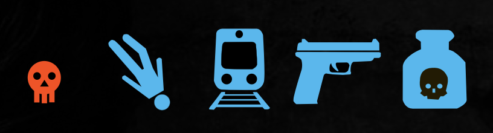
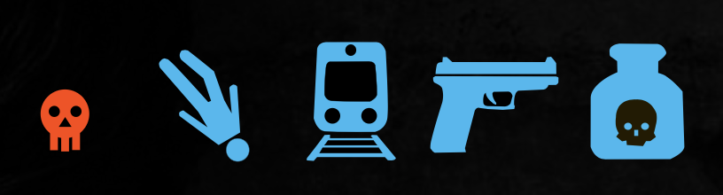

Teen’s Suicide Prevention Education
Web Development/Visual Designs
Introduction
This project is done in a two-person team using software tools Bracket and Illustrator, and the programming language HTML and CSS. This is a project from IAT 235 which is a course that focuses on visual information design and fundamental knowledge of HTML and CSS. In this project, we are asked to choose an educational topic and make a website for it. The result should represent the information using icons or diagrams instead of text as much as possible. (Click the Image to See Website)

Design/Planning
My main role in this project is icon design and programming(web development). We chose to make a website to raise the attention of parents and educate them on how to prevent their kids from suicide. Since the three keywords for this topic are “Death”, “Warnings” and “Danger”, we decided to use red and black as primary colors, blue and yellow for contrast. Before the programming started, I designed the icons in Illustrator which related to the content and information linked to the button.
 

Programming
This is the first programming class I took, so I did not have much knowledge of responsive design. I chose to use percentage units for the elements to arrange the text and images on the website since it is the only way I learned from the class. Without the knowledge of responsive design and to ensure the layout looks the same on mobile devices, I chose to use VW and VH as the unit for the size of items such as font size and image width, which kept the ratio of layouts by shrinking or expanding depending on the width of the device.
Reflection
From this project, I learned how to effectively convey the information and data by using the combination of image, icon, diagram, and text. Most importantly, it gave me full experience in building a website with basic programming knowledge, which help me to become more successful in the future web development class.